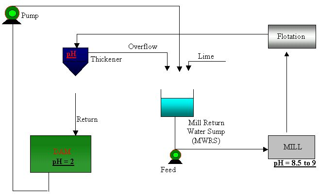
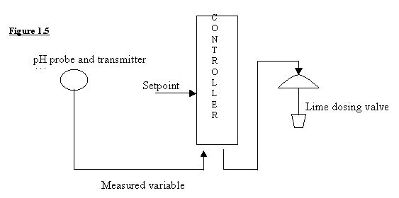
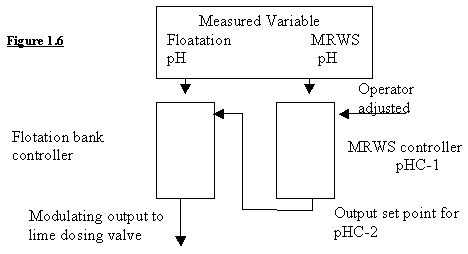

|
| [Home] [About us] [Contact us] [Training] [Optimisation services] [Protuner] |
| [Loop signatures] [Case histories] [Continuous loop performance monitoring] |
|
Control Loop Case History 85 pH PROBLEMS AT AN AUSTRALIAN MINE I recently received an enquiry from the instrument and control engineer on an Australian mine who has been having fairly severe problems trying to control the pH in his flotation plant. He has requested that his name be withheld, and for the article I will give him the fictitious name of Tom. This is Tom's email to me: Feed water pH control It should be noted that in order for the frother and collector to be chemically efficient the pH of the water that the reagents are dosed into has to be tightly controlled. The circuit I am using is as follows. The water circuit in is as seen in Figure 1.4. From said circuit it should be noted that the water returning from the dam is very acidic and that the thickener overflow water is fairly neutral. It should also be noted that in order for the reagents dosed at the flotation circuit to operate effectively the pH of the solution in said circuit had to be between 8.5 and 9.0  Figure 1.4 My first attempt at controlling the Mill Water Return Sump (MWRS) was a simple pH control algorithm that operated as per Figure 1.5. A pH probe and transmitter (A) and a control valve (D) were fitted to the MRWS. The output from this transmitter was used as the measured variable in a two-term controller. Depending on the controller setpoint (B) an output was sent to a lime dosing valve and the pH in the sump maintained at the required value. Unfortunately I found it to be exceedingly difficult to maintain the required pH levels at the flotation circuit. Having looked at the dosing circuit I realised that the MWRS which was basically being used as Reaction Vessel (i.e. the vessel in which the reaction between the process stream and reagent, in this case lime, takes place) was not large enough. In fact the required reaction was taking place as the water passed through the pipes enroute to the floatation bank. Simple I thought I will either increase the size of the MRWS or improve agitation in the vessel and that will be the end of my problems. Unfortunately both these options would involve plant down time and would also require a fair amount of capital.  In order to come up with an inexpensive but reliable solution I realised that I would have to do some test work. Through a campaign of sampling and dosing I was able to ascertain that the correct pH could be achieved if my dosing control strategy was changed. Cascade control loop The control philosophy finally decided upon was a cascade system. The cascade control loop that I eventually employed is as seen in Figure 1.6. Controller tuning proved difficult, however through a process of trial and error I found that the master control loop had to be set to be much less responsive than the slave, which was set to react rapidly to changes. The reasoning behind this was that the master controller had to compensate for the delay that existed between the reagent flow being adjusted and the time it took for the chemical reaction as a result of these adjustments to occur.  Referring to Figure 1.5 I divided the water circuit into two definite areas. The first area was the MRWS where the neutralising reagent lime was dosed and the second was the Flotation bank where flocculent was added. As mentioned previously these flocculants only operated effectively within a stable pH band. During test work I found that there could be large differences between pH values measured at the MRWS compared to readings taken at the flotation banks. This indicated to me that the lime and water were still reacting with each other after they had left the MRWS. (Precipitation was taking place in the pipes.) Bearing this in mind I decided that by placing pH sensors in strategic points across the water circuit i.e. the MRWS and the flotation banks I would be able to come up with a vastly improved control strategy, maybe!!
This is my reply to Tom Dear Tom, Listing the possibilities that could affect your pH control: 1. One of the most basic and essential requirements for any pH control is that the reagent and product must be properly mixed before it reaches the pH sensor. You will have serious problems if it is not. 2. Another problem I have encountered in similar applications is that the lime slaking solution process is sometimes not automated, and is performed manually, so that the lime solution pH itself varies. 3. Load variations caused by changes in the ore feed to the mill. 4. pH load variations caused by other things being added into the milling circuit like dilution water). 5. pH variations caused by different types of ore. (I am not sure how much this could affect the pH, but I am trying to list all possibilities). 6. Various valve problems (e.g. non-linear installed characteristics, hysteresis, etc.) in the lime solution dosing valve. Note that valve problems cause 85% of all loop problems. 7. Incorrect controller set-up. (Typically about 75 – 80% of all plants I have been in using PLC controllers have the controllers set-up incorrectly so that scientific tuning is impossible). 8. Poor controller tuning. It would appear based on the testing you have done, that the primary problem is indeed that insufficient mixing is occurring. However your original control loop had the pH probe inside the MWRS. This was not a good spot for the reason given in point 1 above, particularly as you say the agitation is not good.. Ideally the measurement should have been after the MWRS's pump outlet, probably at the inlet to the mill, where you would have a much better chance of getting a truly representative pH reading. If you do perform tests and find that the mixing is still not complete there, then I imagine it would be complete after the transit of the mixture through the mill, the mill sump, and then through the mill sump pump. If so, you would be better off measuring the pH there (which is probably the same as you are now doing by measuring it directly in what I would assume is the first flotation tank). The disadvantage of this measuring point is that you dramatically increasing the deadtime and lags which will be generated by the residence time of the mill, which I assume may be extensive. It will also possibly be affected by mill dilution water and any other additions into the mill like returns, etc. With the slower dynamics introduced by the mill, control tuning must perforce be correspondingly slower, thus increasing the time to correct load changes. If you are getting significant load changes in the mill for the reasons given above and if you are loosing a lot of money through poor pH control in your flotation, and if you the mixing is not complete after the MWRS, then I believe it is essential that you reconsider trying to improve mixing in the MWRS. I would also specifically suggest trying improving the agitation first, before going to the expense of a larger vessel. If mixing is then fine , and then with a pH measurement just after the MWRS's pump outlet, you should get relatively better control as far as the pH of the water entering the mill is concerned, as you only have the dynamics of the MWRS to take into account when tuning. After that you could put a pH measurement into the first floatation tank feeding a master controller, just like you are currently doing, and then send the output to the setpoint of the MWRS pH controller. There is however a disadvantage in cascade control of two slow systems like yours as you have already discovered. This is because they are interactive. Ideally the secondary loop should be at least 10 times faster than the primary. This is very unlikely to be the case here. Therefore it will be necessary to tune the secondary as fast as possible (but leaving sufficient robustness to avoid instability if anything changes) and slow the tuning of the primary down very dramatically. Another possibility is to leave the MWRS loop alone, and add a second "fine" control, by injecting caustic solution, into the mill sump. (This is assuming that satisfactory mixing could be achieved in the sump). However this would need quite a lot more thinking about and discussion. If you don't have load changes happening quickly in the mill, which in reality (and ideally) should not occur if you are milling at constant load, then you will be better off with a single loop with the measurement in the first flotation tank. The cascade will not help that much, and will probably actually give slower control as the primary controller has to be detuned. I would also suggest you should also examine the other possible problem causes listed above. If any of them are likely to be occurring in your plant, then solutions to them will be found by studying my "Basic Trouble Shooting and Loop Tuning" CD, which you are ordering. Hope this helps. Kind regards, Mike Brown Michael
Brown is a specialist in control loop optimisation, with many years of
experience in process control instrumentation. His main activities are
consulting, and teaching practical control loop analysis and
optimisation. He gives training courses which can be held in clients'
plants, where students can have the added benefit of practising on live
loops. His work takes him to plants all over South Africa, and also to
other countries. He can be contacted at: |